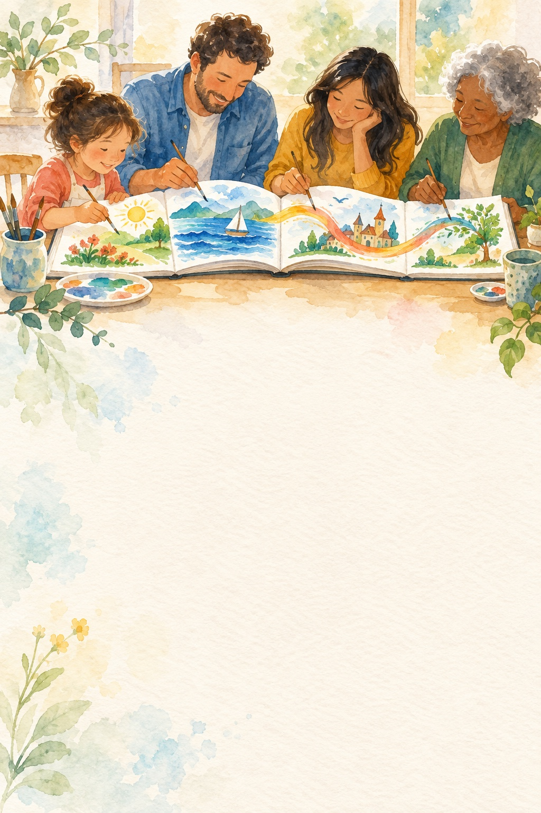
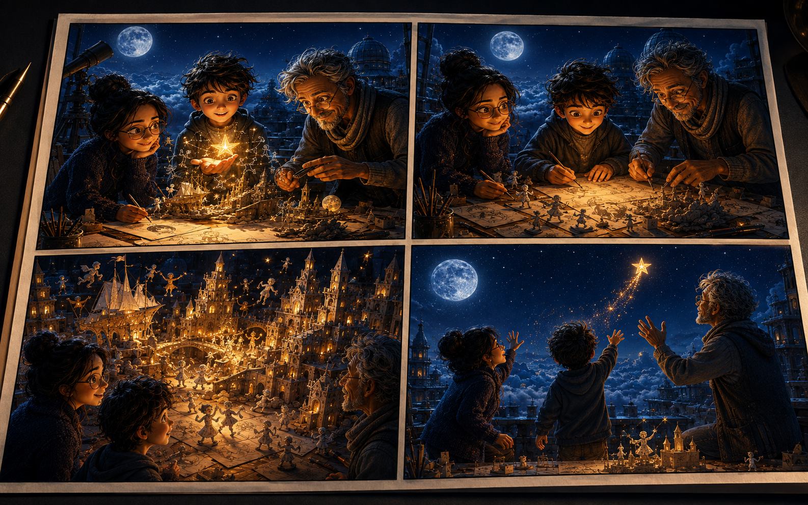

Your story starts here
Choose one path now. You can invite other creators later.
A parent, legal guardian, or educator must oversee this account’s invitations, sharing, and purchases.


A metadata-free working copy will be sent to your selected regional safety and AI image service, then removed from this setup flow. It is never made public automatically.
✓ Private by default · Strict safe-content policy